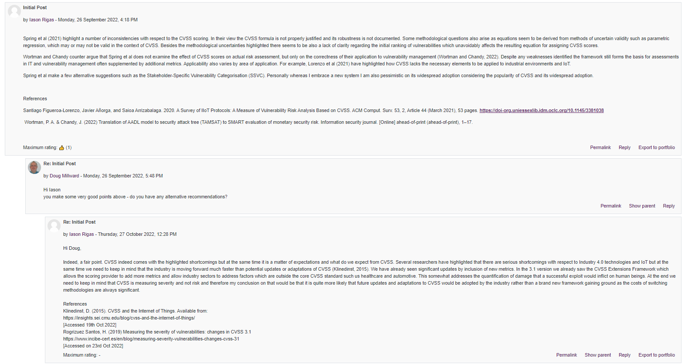

The focus of unit 7 was on quantitative risk modelling and methods such as MC, Bayes based methods, MCDM , TOPSIS, AHP and ANP. This was an exciting week for me as it was the first time I was introduced to quantitative risk modelling methods. I have a background in risk management for operations within the aeronautical industrywhich normally focuses on qualitative risk assessments mainly because of the complexity and data sets required for quantitative analysis. Of course quantitative analysis does happen in the industry, but it is usually done by safety engineers on the side of aircraft manufacturers, air navigation service providers (a.k.a air traffic control) and insurace companies based on various models.
Collaborative Activity
The second colab activity was focused around the question of whether it is time to change the CVSS based on the article by Spring et al (2021). There were some quite interesting posts on the topic and overall my argument has been that indeed an improvement is needed but perhaps the industry is so much accustomed to CVSS that replacing it completely with something new might be utopic, instead, there is room for improvement of the existing CVSS scoring.
What I found particularly interesting is that in those collab. discussions the topics are always a bit biased with respect to the original positions of the papers. All fellow students started their posts by adopting the position by Spring et al and argueing deeply in favour of it as it seems to be the right think to do in such an assignment. I tried to differentiate myself from that and argue that indeed there are weaknesses but CVSS is not as bad as Spring et al. argue. So overall there was a bit of an element of psychological groupthink in the forums or perhaps bias in favour of what seems to be the most reasonable position to adopt.
